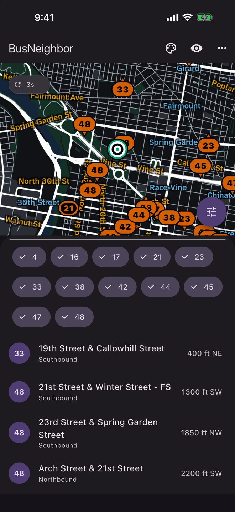
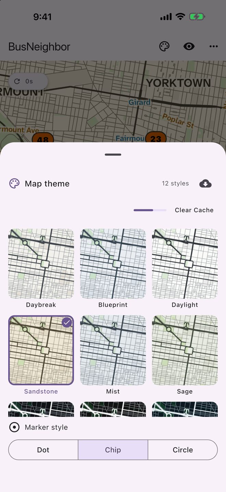

Made to be read, not just seen
BusNeighbor is designed for riders who are blind or have low vision, and that makes it clearer for everyone.
- Every control works with VoiceOver, and the nearest vehicles can be read out as a list: route, intersection, and distance.
- Twelve map palettes tuned for contrast, and compatibility with large text throughout.
- The app always tells you how old the data is, and a bus that stops reporting looks different from one that's live.


Nothing collected
- No accounts
- No ads
- No analytics
- No tracking
Location is optional, is never requested when the app opens, and never leaves your phone. The privacy policy is short and in plain English.
Who made this
I'm Joe Mirarchi (Joseph Dante, if you ask my mother). I ride the bus back and forth to Center City, and I built BusNeighbor to feel more confident taking the bus, with a realistic, constantly updating view of where my ride is. The transit apps I'd tried were too complicated, too confusing, or too unreliable.
Then I met a friend through C.O.D.E. Philly who installed the app the first time we met, but needed accessibility features to use it. So I rose to the challenge.
I'm an enterprise backend engineer who works in Java and Python, and I learned Flutter and Dart to build this app. Before engineering, I researched and analyzed public information. Advocating for people with disabilities is important to me. I saw a gap in what was available to serve the community, and I wanted to help.